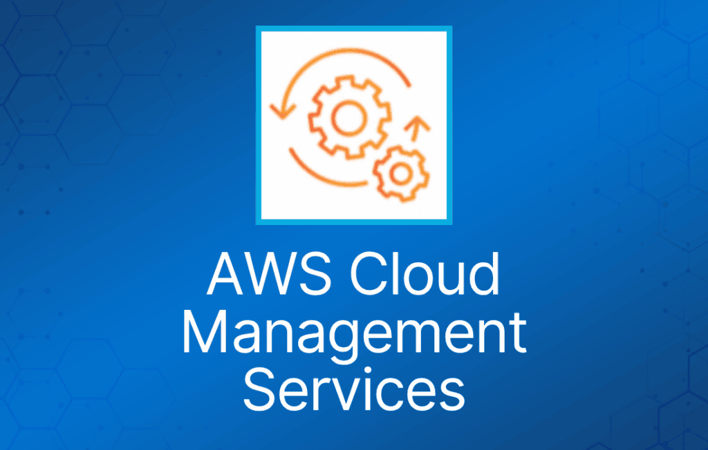
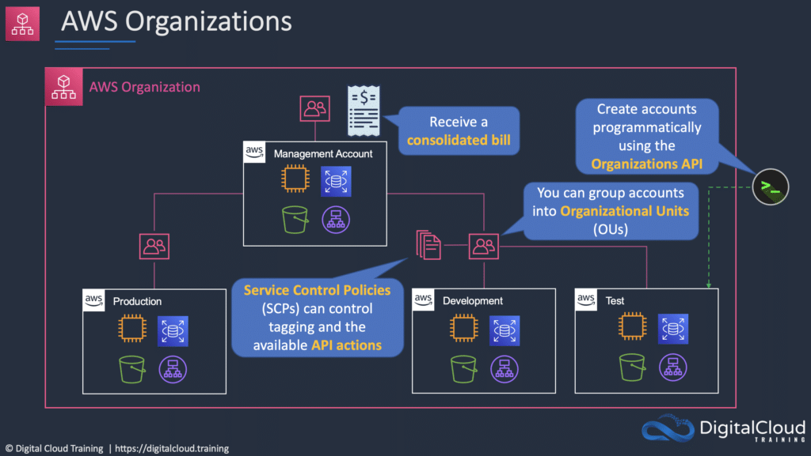
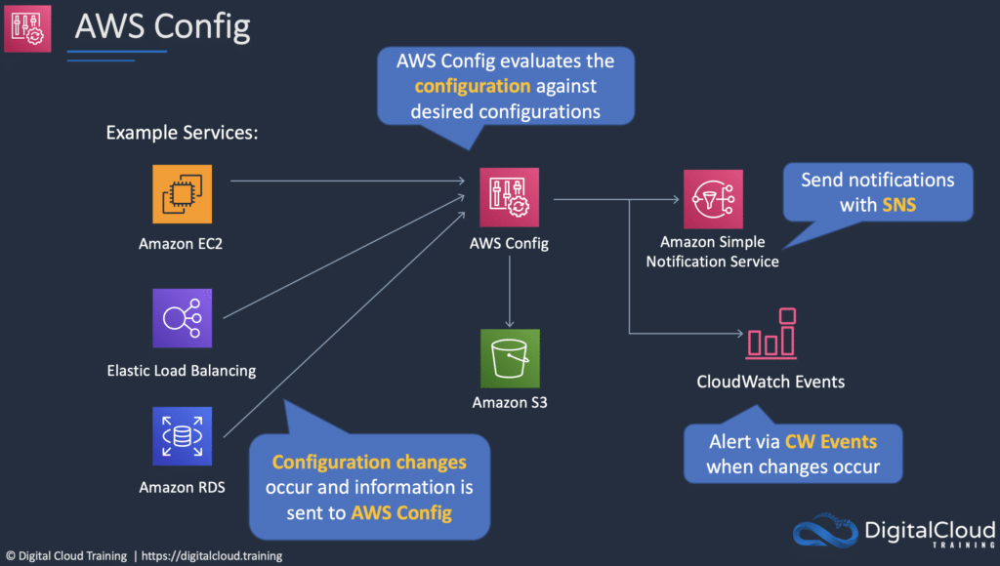

AWS 云管理服务可用于账户管理、配置合规、应用交付和系统管理。
AWS Organizations
AWS Organizations 允许你将多个 AWS 账户整合到一个由你创建并集中管理的组织中。
提供两种功能集：
- Consolidated Billing。
- 全部功能。
包含 root 账户和组织单元（OU）。
策略应用于 root 账户或 OU。
Consolidated billing 包含：
- Paying Account —— 独立存在，无法访问其他账户的资源。
- Linked Accounts —— 所有 linked account 都是独立的。

AWS Control Tower
简化创建多账户环境的过程。
为你搭建治理、合规和安全护栏（guardrail）。
与其他服务和功能集成，为你搭建环境，包括：
- AWS Organizations、SCP、OU、AWS Config、AWS CloudTrail、Amazon S3、Amazon SNS、AWS CloudFormation、AWS Service Catalog、AWS Single Sign-On（SSO）。
AWS Control Tower 可为你配置的护栏示例包括：
- 禁止对 Amazon Simple Storage Service（Amazon S3）bucket 的公开写访问。
- 禁止未启用多因素认证的 root 用户访问。
- 为挂载到 Amazon EC2 实例的 Amazon EBS 卷启用加密。
AWS Config
AWS Config 是一项全托管服务，为你提供 AWS 资源清单、配置历史和配置变更通知，以实现安全和监管合规。
使用 AWS Config，你可以发现现存和已删除的 AWS 资源，评估整体合规性是否符合规则，并深入查看资源在任意时间点的配置详情。AWS Config 支持合规审计、安全分析、资源变更跟踪和故障排查。

AWS Service Catalog
AWS Service Catalog 允许组织创建和管理获准在 AWS 上使用的 IT 服务目录。
AWS Service Catalog 让你可以集中管理常用部署的 IT 服务。
IT 服务可以包括虚拟机镜像、服务器、软件、数据库以及多层应用架构。
让用户能够快速部署他们所需的、经过批准的 IT 服务。
AWS Systems Manager
管理多种 AWS 资源，包括 Amazon EC2、Amazon S3、Amazon RDS 等。
Systems Manager 组件：
- Automation。
- Run Command。
- Inventory。
- Patch Manager。
- Session Manager。
- Parameter Store。
AWS Personal Health Dashboard
当 AWS 发生可能影响你的事件时，AWS Personal Health Dashboard 会提供告警和修复指导。
Personal Health Dashboard 让你以个性化视角查看支撑你 AWS 资源的 AWS 服务的性能和可用性。
仪表板会显示相关且及时的信息，帮助你管理正在进行中的事件。
还提供主动通知，帮助你为计划中的活动提前做准备。
告警由 AWS 资源健康状态的变化触发，让你能看到事件并获得指导，快速诊断和解决问题。
你可以获得支撑应用的 AWS 服务状态的个性化视图，从而在 AWS 发生可能影响你的问题时第一时间发现。
还提供前瞻性的通知，你可以跨多个渠道（包括邮件和手机通知）设置告警，及时收到相关信息，为可能影响你的计划内变更做好准备。
告警包含修复详情和具体指导，让你能够立即采取行动，应对影响资源的 AWS 事件。
可与 Amazon CloudWatch Events 集成，让你构建自定义规则，并选择 AWS Lambda 函数等目标来定义自动化修复动作。
AWS Health API 允许你将健康数据和通知集成到现有的自研或第三方 IT 管理工具中。
Service Health Dashboard
AWS 发布最新的服务可用性信息。
这些信息不是个性化的（与 Personal Health Dashboard 不同）。
AWS OpsWorks
AWS OpsWorks 是一项配置管理服务，提供托管的 Chef 和 Puppet 实例。
更新内容包括补丁、更新、备份、配置和合规管理。
AWS Trusted Advisor
AWS Trusted Advisor 是一款在线工具，提供实时指导，帮助你按照 AWS 最佳实践预配置资源。
Trusted Advisor 检查可以帮助你优化 AWS 基础设施、提升安全性和性能、降低总体成本，并监控服务限额。
AWS Basic Support 和 AWS Developer Support 客户可以使用 6 项安全检查（S3 Bucket Permissions、Security Groups – Specific Ports Unrestricted、IAM Use、MFA on Root Account、EBS Public Snapshots、RDS Public Snapshots）和 50 项服务限额检查。
AWS Business Support 和 AWS Enterprise Support 客户可以使用全部 115 项 Trusted Advisor 检查（14 项成本优化、17 项安全、24 项容错、10 项性能和 50 项服务限额）及建议。
AWS CloudFormation
AWS CloudFormation 提供一种通用语言，让你可以描述和预配置云环境中的所有基础设施资源。
CloudFormation 允许你用一个简单的文本文件，以自动化且安全的方式，跨所有 region 和账户建模并预配置应用所需的全部资源。
这个文件就是你云环境的唯一事实来源（single source of truth）。
你可以使用 JSON 或 YAML 来描述要创建和配置哪些 AWS 资源。